Release 6.10¶
Page Rollup¶
It is now possible to create page rollup queries that spans the whole tenant or specific business profiles.
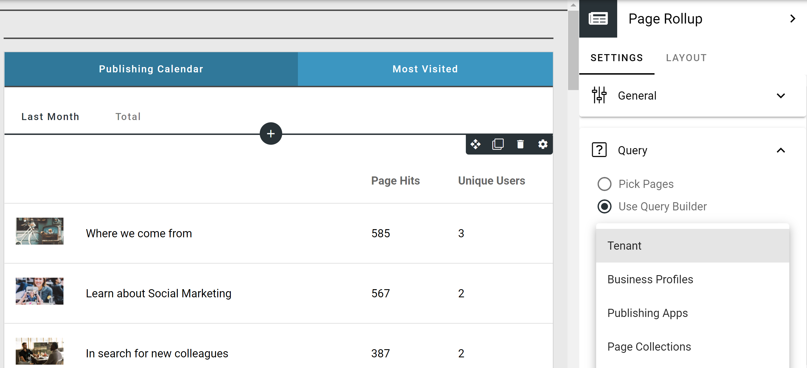Note
In order to support page rollup queries across publishing apps, three new built-in security groups will replace the current built-in groups.
The new groups are:
Internal Users except restricted: All internal users except users with mobile-only (Kaizala) limited license.
Internal Users: All internal users in the organization.
External Users: All external users including invited guest accounts.
Automatic migration to new groups will be done as follows:
“Everyone except external” will be automatically replaced by “Internal Users except restricted”.
“Everyone” will be replace by “Internal Users” + “External Users” for publishing apps that allow mobile-only access.
“Everyone” will be replace by “Internal Users except restricted” + “External Users” for publishing apps that do not allow mobile-only access.
Page statistics is now built into the page rollup. It is possible to display and sort on [Page Hits: All Users], [Page Hits: Current User] and [Unique Users]. The statistics time period can be limited to one week from today, two weeks from today or one month from today.

The page rollup can now be used to create editorial dashboards that includes pages that have not been published. The rollup is security trimmed so that only authors can see pages that have not been published yet.

To further improve the experience for an editor, you can query and display the workflow status of a page. The workflow status can be “Checked Out”, “Pending Publishing”, “Scheduled for Publishing” and “Waiting for Approval”.

A new switch has been addded to the query part that makes it possible to exclude variations from the rollup.
A new Calendar view is now available for the page rollup block.

A new switch has been added to the page rollup display that makes it possible to export the result to Excel for further analysis.
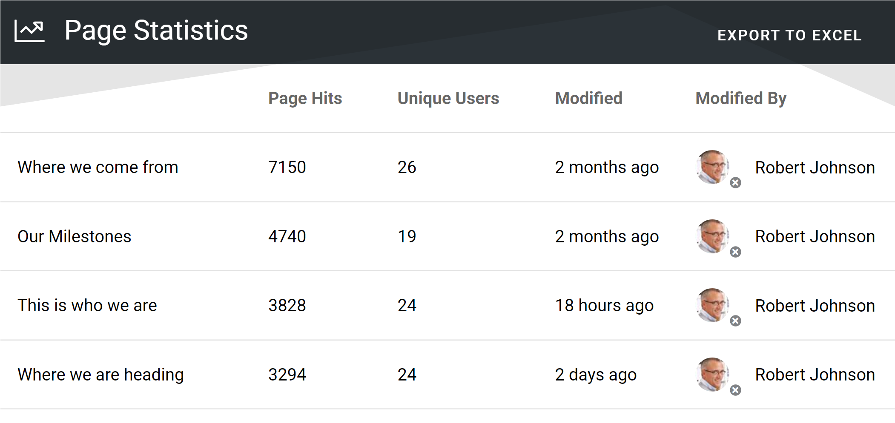 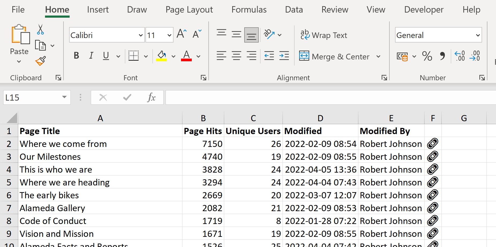Teamwork¶
Naming policies are now supported for teamwork templates. A naming policy consists of prefix, suffix and blocked words.
The prefix and suffix can be fixed text and/or dynamic values from the teamwork app properties or the current logged in user.
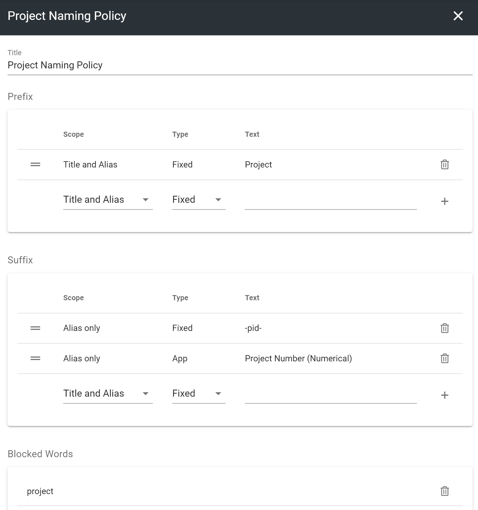Besides a naming policy, a teamwork template can be configured with a number of additional policies:
Minimum no of characters in description: Will not let the user proceed with the teamwork creation without a clear description.
Minimum no of admins: Forces long-term ownership of the teamwork.
Default administrators: Makes it possible for central support functions to get ownership of all teamwork by default.
Sensitivity labels: Makes it possible to apply additional policies using Microsoft compliance features.
 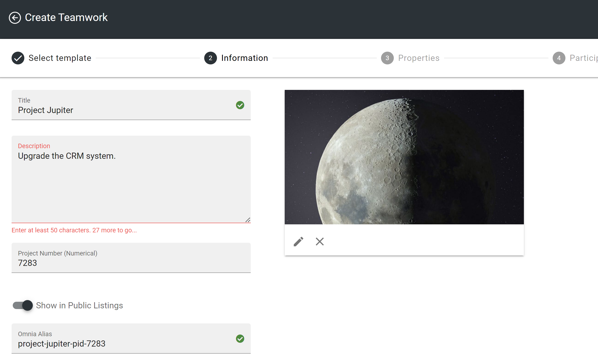
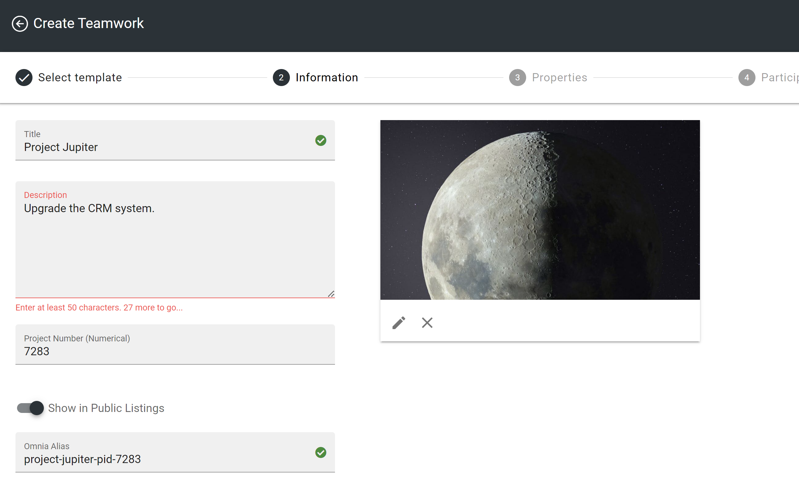
Teamwork templates can now be targeted to a specific group of people.

Teamwork properties now support both default values and help texts.


A new tab has been added to the teamwork app list in Omnia Admin to show inactive teamwork.
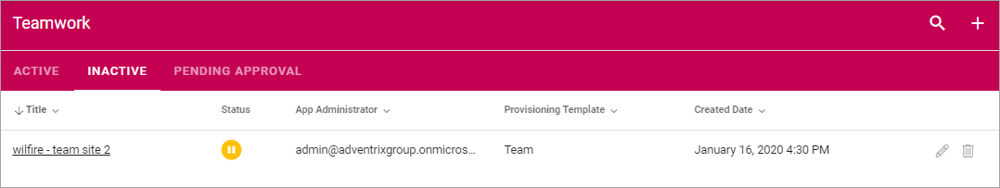It is now possible for a global IT administrator to securely turn off the possibility for end users to create Microsoft 365 groups from within the standard services in Microsoft 365 (Teams, Planner, SharePoint etc) and force a structured workflow using Omnia teamwork templates.
Microsoft Teams Integration¶
A new feature in Teamwork makes it possible to create layouts that can be used in MS Teams tabs.


Built-in MS Teams templates can now be used as a basis for Teamwork.
 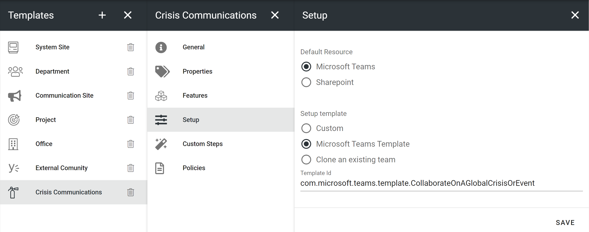
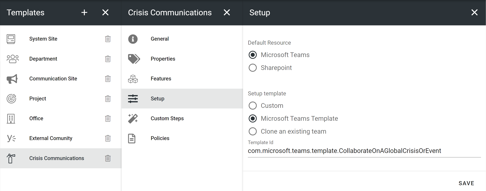
A teamwork template can also be set up to allow for the end user to clone an existing MS Teams team.
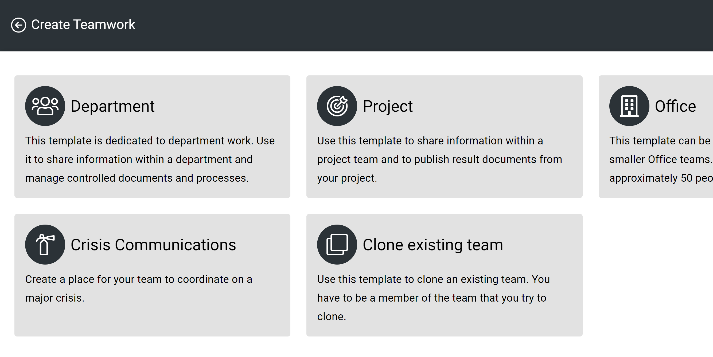
If you add the app “Tasks by Planner and To Do” to a channel tab, it is possible to configure the creation of a Planner board on teamwork provisioning.

Web Content Management Editor¶
The related links block can be configured to allow documents that you pick to be locally accessible together with the page. Documents that are locally accessible are versioned together with the page and can be accessed by users without a SharePoint license.
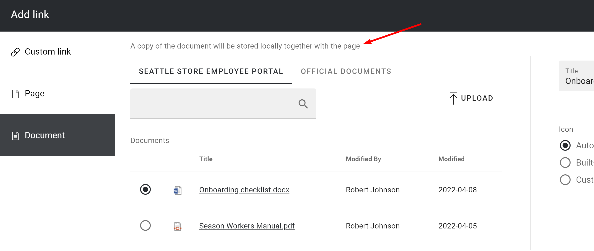
A variation can be configured to support languages that flow from right to left.
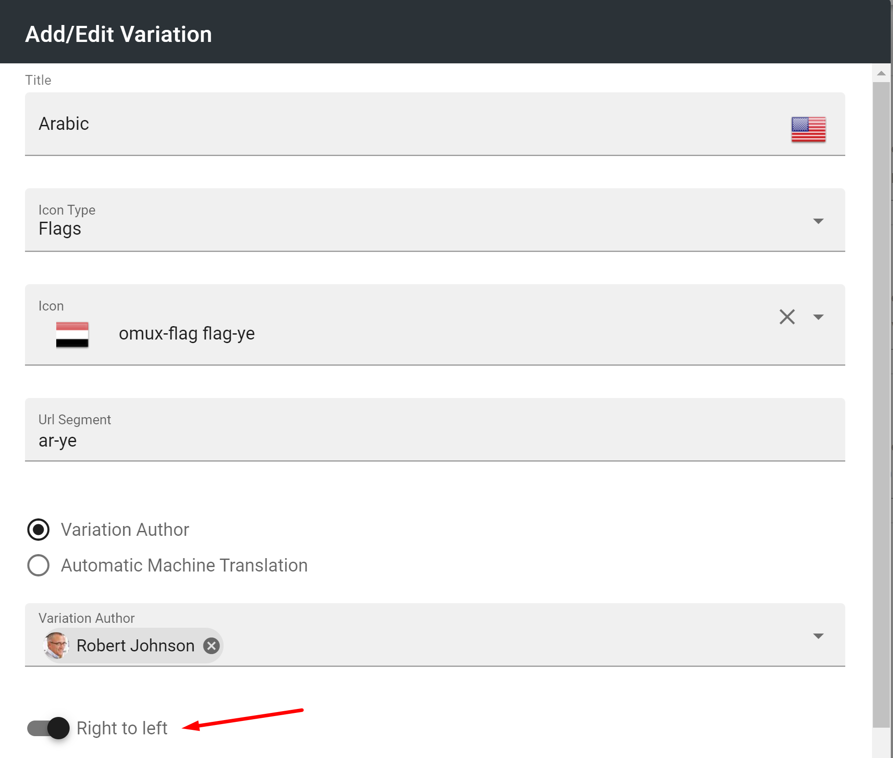
Pages can now be moved and copied across page collections within a publishing app.
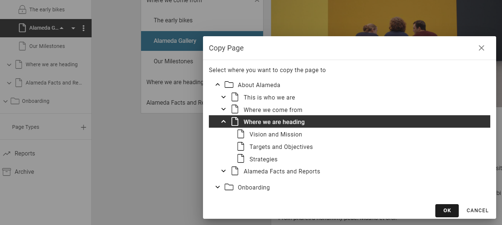If you need to restructure your information structure, you can use the new Move Page Collection feature.
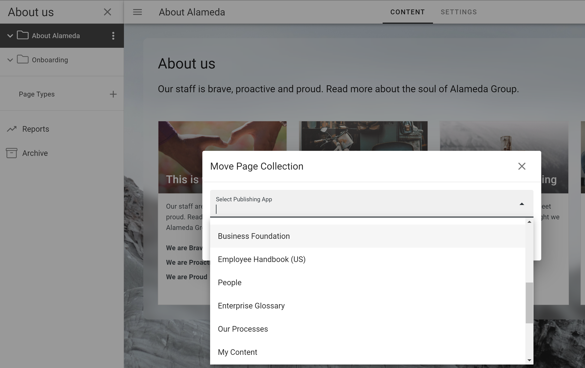This feature will move a page collection including all pages and resources from one Publishing App to another.
A new feature has been added to the layouts section of blocks that can be used in page types to decide whether the page using the page type should inherited the settings from the page type or not.

If the block is configured to allow editing the lock, the designer of a page can unlock the block settings and override it with local settings.
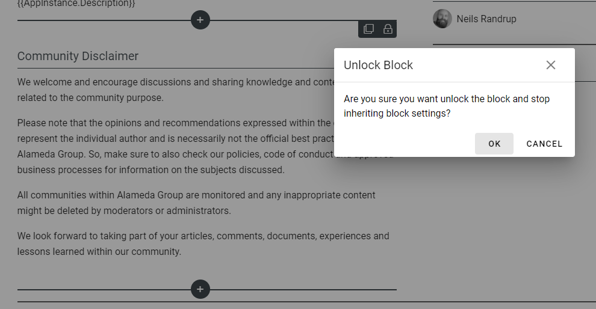Digital Signage¶
Omnia is now prepared for integration with any modern supplier of digital signage solutions.

App Posts¶
A new feature makes it possible to post coversation messages in an app. It can be used to implement a common discussion within a community or a conversation within a teamwork.


Print Processes¶
It is now possible to print a process including all process steps and drawings to either PDF or printer.